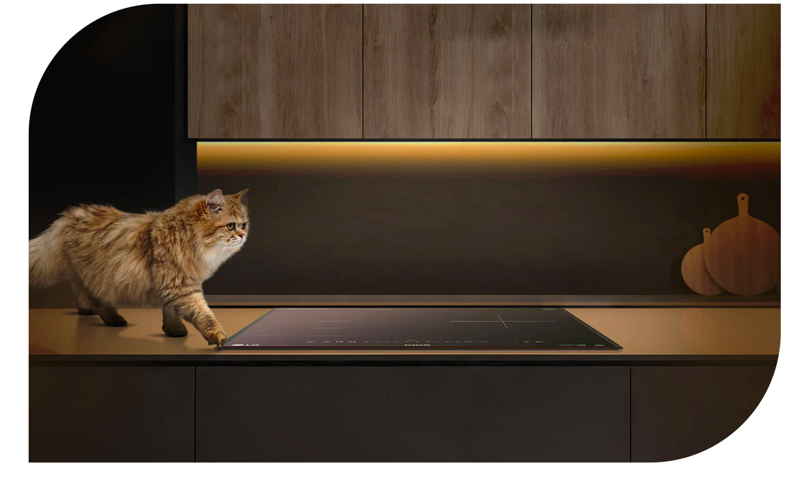

기능 3
17종 안전 장치 시스템
안전? 그냥 꼬옥 믿어주면 돼

* 이해를 돕기 위해 연출된 이미지 입니다.
* 17종 안전장치 : 잠금버튼, 타이머, 전원 자동OFF, 시간제어, 출력제어, 잔열표시"H", 전류 퓨즈, 용기 감지, 일시 낮춤, 화구 자동 OFF, 화력 인디케이터, 온도퓨즈, 분리벽 코일, 과열감지, 220℃ 내열코일, 고성능단열재, 고/저전압 보호설계
타이머, 일시 낮춤, 잠금 기능,
과열 감지, 시간 제어, 출력 제어 등
17종 안전장치로 안전하게 요리할 수 있어요.